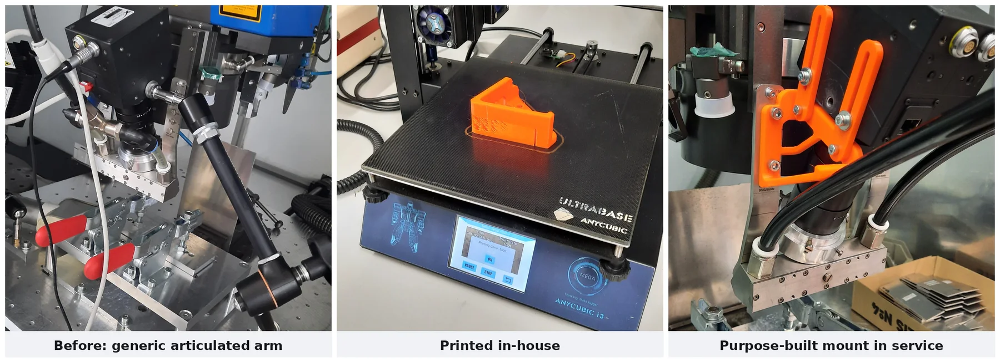
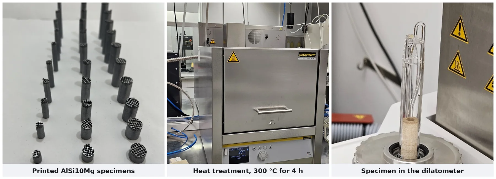
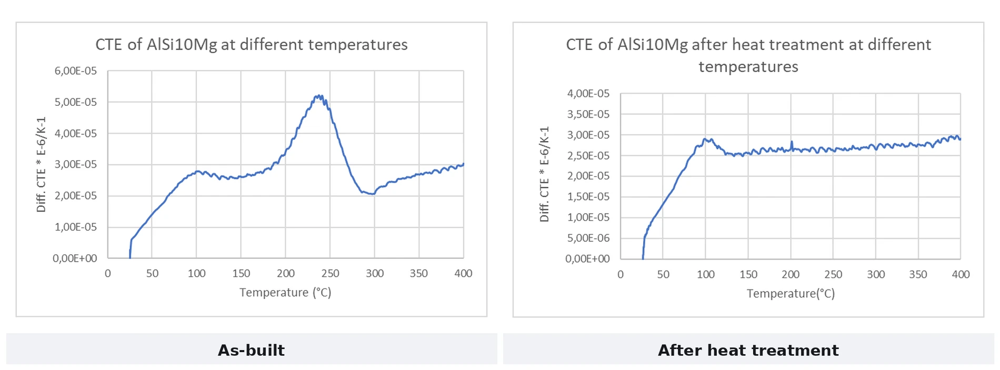

Every number below comes from the thesis reports, and the instrument that produced it is named. Laser Powder Bed Fusion of Metals (PBF-LB/M) — also called L-PBF or SLM — builds a part by melting fine metal powder layer by layer with a laser.
Project 01 — Master's Thesis · PBF-LB/M process development
In-Process Laser Remelting for Precise Layer Topography in FeSi6.5 Soft Magnetic Components
Institution: Hochschule Aalen (Aalen University of Applied Sciences) — LaserApplication Center (LAZ) · Research programme SmartPro – Smart-ADD Machine: ALC2 × ICM universal laser research system Supervisors: Prof. Dr. Harald Riegel (first) · Prof. Dr. Dagmar Goll (second) Submitted September 2025 · Defended October 2025 · Published in Procedia CIRP 124 (2024)
Problem statement
Over 40% of the energy lost in an electrical machine goes to eddy currents. The fix is lamination: thin, individually insulated steel sheets stacked so the current has no continuous path. FeSi6.5 is the ideal material for it, with up to 30% lower core losses than conventional silicon steel. It is also too brittle to roll, stamp or cast without cracking, so the industry designs motors around what the rolling mill can produce instead of what the magnetic circuit wants.
Printing removes that constraint and introduces a new one. As-built surfaces are rough (Sa ≈ 4.55 µm), and a rough layer needs a thicker insulating recoat. Thicker insulation means thicker laminations, which brings the eddy-current losses straight back.
The task: establish a PBF-LB/M route for FeSi6.5 that produces deliberately smooth, controlled layer topography — flat enough to carry an ultra-thin insulating layer — while holding full density, without cracking, and without losing dimensional accuracy in an alloy that punishes every one of those mistakes.
Etched cross-sections — every-layer cyclic remelting (left) against normal build-up (right). Columnar grains give way to a continuous equiaxed structure. Sa 4.55 µm → 1.8 µm, at full density.The remelting principle: a standard build-up pass (blue, first exposure) followed by a rotated remelting pass (red, second exposure) over the same layer.
Engineering approach & tools
Phase 1 — Establish the baseline build window
A 4 × 4 matrix over laser power 200–350 W and scan speed 600–900 mm/s, at constant 80 µm hatch, 80 µm focus, 40 µm layers and 90° scan rotation. Sixteen 10 × 10 mm samples, argon at 4 m/s, < 200 ppm residual oxygen. 150 W failed to melt, 400 W over-melted. Working point fixed at 300 W / 800 mm/s ≈ 117 J/mm³, giving Sa 7.25 µm at 0.152% porosity.
Phase 2 — Final-layer remelting
One re-exposure of the top layer, sweeping 300–400 W against spot diameter 80–200 µm. Two failure modes emerged, and separating them is what made the window achievable:
Molten-metal deposition at the part edges scales with power intensity — at 400 W / 160 µm the deposition reached 898 µm at 20.9 kW/mm²; at 300 W it fell to 545 µm at 15.7 kW/mm².
Remelting depth scales with areal energy intensity.
Lowering power intensity suppressed the edge deposition; trimming areal energy density controlled the depth. A single volumetric energy density figure conflates the two and cannot resolve the trade-off.
Phase 3 — Cyclic remelting
Remelting extended to the whole build at intervals of every 1st, 2nd, 3rd and 5th layer, at 325 W / 300 µm spot / 60 µm hatch / 600 and 800 mm/s, against a non-remelted reference.
The four cyclic strategies tested: remelting every 1st, 2nd, 3rd and 5th layer, against a non-remelted reference.The specimens behind every number on this page. Each build was sectioned parallel to the build direction, mounted in resin, ground and polished, then labelled by sample pair before microscopy.
Verification — performed in-house, end to end
Areal topography: KEYENCE VR-3100 one-shot 3D optical profilometer (Sa, elevation maps, line scans).
Tactile roughness: MarSurf M400 (Ra, Rq, Rz, Rt), measured both parallel and perpendicular to the scan vector — a directional process produces directional roughness, and a single-direction measurement would have flattered the result.
Cross-sections: Struers Secotom 10 sectioning and Tegramin 30 polishing parallel to the build direction, SiC 50–2000 grit, 3 µm and 1 µm diamond suspension, Co-m3 etch (20–30 s) for Fe-Si; imaged on the Zeiss Axio Imager.Z2 Vario to 500× with ZEN Core quantifying pore size, pore count/mm² and area-fraction porosity by adaptive thresholding.
Process hardware: TRUMPF TruFiber 400 single-mode fibre laser (1075 nm, 400 W) · SCANLAB intelliSCANse 30 scanner · varioSCANde II 40i PR z-shifter with negative defocusing · Autodesk AMCF control · Netfabb 2024 build preparation · hema ICAM weld coaxial monitoring.
Key contribution & results
~60%reduction in areal surface roughness Sa 4.55 µm → 1.8 µm
0.152%porosity at the optimised build point essentially full density
Dark-field cross-sections at 800 and 600 mm/s, with measured remelting depths (48–96 µm here) and the resulting top layer. Across the full parameter set penetration stayed within a controlled 50–300 µm band.
Additional quantified outcomes
Porosity at the optimised build point
0.152% — essentially full density
Remelting depth, controlled range
50–300 µm, stable and reproducible across intervals
Cracking / delamination
None observed in any cyclically remelted sample
Embrittlement
No increase, despite repeated thermal cycling of a brittle alloy
Dimensional accuracy
Maintained
Parameter combinations characterised
30+, across three experimental phases
The finding that matters
Remelting is normally used to raise density. Applied every layer it does something else: it repeatedly disrupts directional solidification, turning columnar grains into a continuous equiaxed structure through the full part height. Frequency is the control. Every layer gives full transition, every 3rd layer partial, every 5th essentially none. That is a dial an engineer can set.
Publication
Hofele M., Antony H., Kolb D., Riegel H. (2024). Production of soft magnetic FeSi6.5 parts with precise layer topography using integrated laser remelting at PBF-LB/M to induce multi-material lamination.Procedia CIRP 124, pp. 6–11.
DOI: 10.1016/j.procir.2024.08.060
Project 02 — Machine development · Computational Fluid Dynamics (CFD) · System integration
Inlet Gas Circulation System for a PBF-LB/M Research Machine
Institution: Hochschule Aalen (Aalen University of Applied Sciences) — LaserApplication Center (LAZ) · Machine: ALC2 Period: May 2023 – March 2024 — begun as a working student, completed as a research assistant Scope: Design · CFD analysis · Manufacture · Integration · Commissioning
Problem statement
In PBF-LB/M the laser vaporises metal, ejecting spatter and condensate into the build chamber. Whatever is not swept away lands back on the powder bed and is fused into the next layer as a defect, while airborne particulate attenuates and scatters the incoming beam.
On the ALC2, the self-built machine carrying the FeSi6.5 work, inconsistent inlet flow meant part quality depended partly on where on the plate the sample sat. That is fatal to a study which has to attribute every difference to the parameter under test.
There was a second, coupled problem. FeSi6.5 is crack-sensitive, and an unheated platform gives steep thermal gradients with little control over how grains nucleate and grow.
The task: design a gas system that sweeps molten spatter clear of the plate instead of letting it settle back, and pair it with platform heating to control how the grains form.
Live smoke-flow validation of the 3D-printed inlet nozzles on the test rig, confirming the directed gas curtain predicted in CFD.Velocity streamlines through the inlet nozzle and diffuser assembly (ANSYS Fluent, 0–4.65 m/s). Design variants were selected on simulation evidence before fabrication.
Engineering approach & tools
Requirements. Target velocity over the process zone, a flow direction that carries spatter clear of the plate rather than across it, and a geometry that fits a machine which already exists.
Design. Developed inlet nozzle and diffuser geometry in CATIA V5, iterating nozzle arrangement, outlet cross-section and flow-straightening features to convert a concentrated inlet stream into an even, directed curtain across the full build area.
CFD analysis. Modelled the chamber flow in ANSYS Fluent, then read velocity contours and streamlines at the powder-bed plane to find and remove the recirculation zones and stagnation points where spatter settles instead of being carried out.
Iteration against simulation. Successive geometry variants through CFD, selected on evidence. That loop is what separates a designed component from a fabricated guess.
Physical validation. Built printed prototypes of the selected geometry and ran smoke-flow tests on a rig before committing to the machine.
Thermal control. Integrated build platform heating to reduce thermal gradients, influence nucleation and grain growth, and lower the residual stress and crack risk that brittle FeSi6.5 is most vulnerable to.
Manufacture. Produced the component on a TRUMPF TruPrint 1000, monitoring the build live — recoater pass, laser exposure and melt-pool behaviour — against the parameter set on the machine control screen.
Integration and commissioning. Post-processed and integrated the assembly into the ALC2, and verified operation on live builds — the system subsequently carried the full thesis campaign at argon 4 m/s and < 200 ppm residual oxygen.
The component being built on a TRUMPF TruPrint 1000. Recoater pass, laser exposure and melt pool through the laser-safety window, with the live build parameters on the control screen.
As-built with supports, finished component, and the assembly integrated on the machine.
Key contribution & results
2.8%porosity at the best parameter set
10×spread across the array 2.8% to 27.06%
9 of 27runs needed Taguchi L9 design
4 m/sargon flow sustained across full builds
<200 ppmresidual oxygen held in the chamber
CAD → CFD → builtdesigned, simulated, made and commissioned
Spatter management
Active evacuation of molten spatter away from the build platform, instead of redeposition onto the powder bed
Flow field
Recirculation and stagnation zones at the powder-bed plane identified in CFD and designed out
Process atmosphere
Stable argon flow at 4 m/s with < 200 ppm residual oxygen sustained across full builds
Thermal control
Build platform heating integrated to influence grain structure formation and reduce thermal gradients
Manufacture
Component produced by PBF-LB/M and post-processed in-house, with the build monitored live against its parameter set
Delivery
Designed, simulated, manufactured and integrated — complete component lifecycle on operating research hardware
Downstream validation
The system carried the entire FeSi6.5 thesis campaign and the resulting peer-reviewed publication
Why this project is the differentiator
Most AM engineers optimise parameters on a machine. This improved the machine itself, from requirement through CAD, CFD, prototype, validation and commissioning. The proof it worked is that the research it enabled was published.
Project 03 — B.E. Thesis · Direct Metal Laser Sintering (DMLS) · Taguchi Design of Experiments
Porosity Minimisation in DMLS Cobalt-Chromium for Medical Implants
Institution: Jeppiaar Institute of Technology, Chennai · Lead author, four-person project team Period: February – May 2021
Problem statement
Co-Cr is a standard alloy for load-bearing implants — hip and knee joints, dental bridgework, stents — because it is biocompatible, corrosion-resistant and hard. Producing it by DMLS unlocks patient-specific geometry.
But porosity in an implant is not cosmetic: pores are fatigue crack initiation sites in a component required to survive millions of load cycles inside a human body, and Co-Cr already has low ductility.
The task: determine which DMLS parameters actually govern porosity in Co-Cr, rank them by influence, and identify the low-porosity operating region — using a statistically structured method rather than an unaffordable full-factorial campaign.
Co-Cr pore distribution at the best and worst parameter sets of the L9 array — a ~10× spread from parameter choice alone. Scan areas differ (5 × 5 µm and 10 × 10 µm) and are labelled on each panel.
Engineering approach & tools
Taguchi L9 orthogonal array. Three parameters at three levels: laser power (170 / 270 / 370 W), scan speed (250 / 350 / 450 mm/s), hatch spacing (0.15 / 0.25 / 0.35 mm). Nine runs instead of the 27 a full factorial needs, because machine time and powder were the binding constraints.
Sample manufacture. Built the full Co-Cr specimen set by DMLS across all nine parameter sets, executed in randomised order to avoid confounding by build drift.
Multi-method porosity quantification. Cross-checked porosity by micro-CT scanning and localised mass measurement rather than relying on a single technique.
Nanoscale characterisation. Used Atomic Force Microscopy (AFM) to map pore distribution, area, volume and perimeter per sample, applying threshold and watershed grain-detection algorithms for automated pore identification.
Defect-mechanism reasoning. Separated keyhole porosity (spherical, excessive energy density collapsing the vapour depression) from lack-of-fusion porosity (irregular, insufficient melt-pool overlap) — opposite ends of the energy-density scale, requiring opposite corrections.
Statistical analysis. Signal-to-noise ratio analysis (smaller-the-better), ANOVA and contour-plot response surfaces.
S/N response: scan speed dominates porosity (Δ 9.31) over laser power (3.87) and hatch spacing (3.31).
Key contribution & results
Experimental efficiency
9 runs instead of 27 — 67% less machine time and powder
Porosity range across the array
2.8% to 27.06% — nearly a 10× spread from parameter choice alone
Best measured result
2.8% porosity at 270 W / 450 mm/s / 0.15 mm hatch
Dominant factor
Scan speed — S/N delta 9.31, against 3.87 for laser power and 3.31 for hatch spacing
Micro-CT, localised mass measurement and AFM pore mapping, cross-validated
The engineering conclusion
Scan speed dominates porosity by roughly 2.5× over the next factor. That is not the intuitive answer: laser power is what most operators reach for first. Knowing the ranking is what makes the process controllable.
Why it still matters. This is where the method was set: orthogonal design, cross-validated measurement, and reasoning about defect mechanisms rather than guessing at parameters. The same discipline produced the FeSi6.5 result four years later, on a harder alloy.
Project 04 — Self-initiated design and build
Purpose-Built Camera Mount for a Laser Processing Head
Where: LaserApplication Center, Hochschule Aalen · When: March 2023
Watching the melt pool during a build needs the camera held in one fixed, repeatable position. The lab was using a general-purpose articulated arm: it drifted, it fouled the optics, and it had to be re-aimed at the start of every session.
So I made a dedicated one. Sketched it, modelled it, printed it in-house overnight, fitted it the next morning. The slotted arms let you set the angle once; after that it locks and stays where you put it.
Small project, but it is the shortest example of how I work: notice the thing everyone has stopped noticing, then fix it properly.

From a borrowed articulated arm to a printed bracket made for the job.
Project 05 — Minor project during the Master's · Thermal characterisation
Thermal Expansion of 3D-Printed AlSi10Mg, With and Without Heat Treatment
Where: Hochschule Aalen (Aalen University) · Supervisor: Prof. Dr. Markus Merkel When: Winter semester 2023/24, presented January 2024 Team: Two-person project with Anusha Arulalan. I led the specimen design, heat treatment and dilatometry campaign.
Problem statement
Think about a hinge on a satellite's solar array. It unfolds once, in orbit, and it has to work first time. On the way round it swings between roughly −150 °C and +150 °C, so every part of it grows and shrinks on every orbit. If you do not know precisely how much the material moves, you cannot set the clearances, and the mechanism either jams or rattles.
AlSi10Mg is the aluminium alloy most 3D-printed aerospace parts are made from: light, strong, good thermal conductivity. But printing leaves it in a stressed, fine-grained state quite unlike cast aluminium, and heat treatment changes that structure again.
The question: how does heat treatment change the way printed AlSi10Mg expands when it gets hot?

Specimens printed, heat treated, then measured. All three steps carried out in-house.
Approach
Specimen matrix. Cylinders spanning lengths of 5 to 50 mm at diameters of 5, 7.5 and 10 mm, so that any geometry dependence in the result would show up rather than hide.
Printing. Built on an SLM Solutions SLM 280HL (280 × 280 × 350 mm³, twin laser) using the qualified AlSi10Mg parameter set at 60 µm layers, rated to 99.4% minimum relative density. CAD in CATIA V5, build preparation in Materialise Magics.
Heat treatment. Half the set held at 300 °C for four hours in a Nabertherm muffle furnace, then cooled gradually. The other half kept as-built as the control.
Measurement. Thermal expansion measured to 400 °C at 5 K/min on a NETZSCH DIL 402 Supreme dilatometer, resolving length change to 0.1 nm, and cross-checked on a METTLER TOLEDO TMA/SDTA 2+.

Coefficient of thermal expansion against temperature. As-built material shows a pronounced peak near 235 °C, reaching about 5.2 × 10⁻⁵ K⁻¹; after heat treatment the curve settles to a steady 2.5 to 3.0. Note the two charts use different y-axis scales.
30specimen geometry matrix 5 to 50 mm, three diameters
300 °Cheat treatment four hours, gradual cooling
400 °Cexpansion measured to dilatometry and TMA
What it showed
As-built AlSi10Mg does not expand steadily. Its expansion coefficient climbs to a marked peak around 230 °C, which is the printed microstructure relieving itself as it warms. After four hours at 300 °C that peak largely flattens and the material behaves predictably across the whole range.
For a designer this is the practical point: an as-built printed part and a heat-treated one are not the same material thermally, and clearances calculated from handbook aluminium data will be wrong for both. Measure the condition you intend to fly.
Why this project earns its place
It is the only work here on a second alloy family, a second industrial machine and a completely different measurement discipline. Same habit throughout: design the specimen set so the answer cannot hide, then measure it properly.
Further project work
Project
Scope
Period
Sustainable Product Development using AM
Life-cycle comparison of additive vs. conventional manufacturing; Design for Additive Manufacturing (DfAM) lightweighting and material-efficiency assessment
2019–2020
Utility Bicycle — Design and Fabrication
Complete mechanical design and build: concept, structural design, fabrication
2019
Concept Vehicle Exterior Design
Exterior design for a 2026 concept car; sketching, rendering, surface modelling. Winning team, ASBC 2019, Bangalore
2019
Robotics & Automation Integration
End-to-end automation system development and integration for home and industrial products